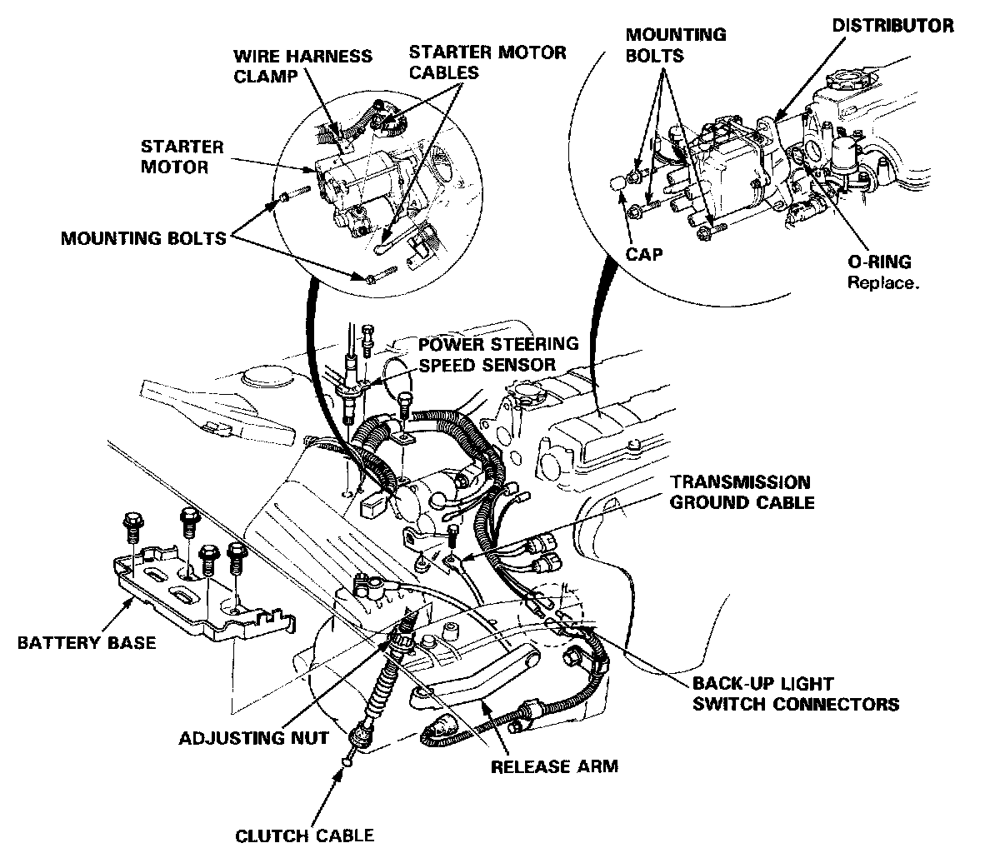
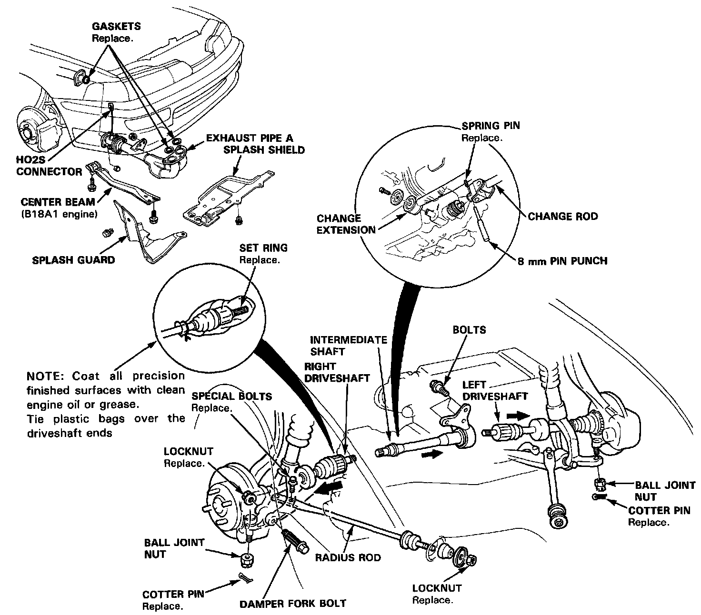
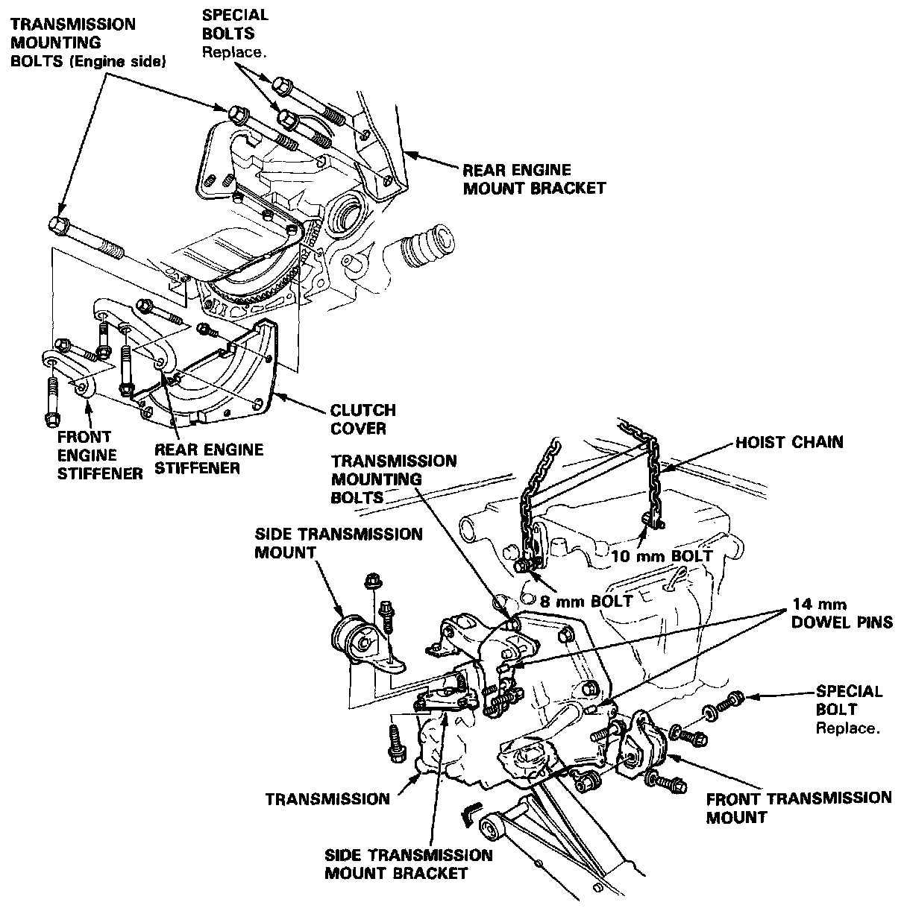

Removal

Warning
- Make sure jacks and safety stands are placed properly and hoist brackets are attached to correct positions on the engine.
- Apply parking brake and block rear wheels so car will not roll off stands and fall on you while working under it.
CAUTION: Use fender covers to avoid damaging painted surfaces.
1. Disconnect the battery negative (-) cable and positive (+) cable, then remove the battery.
2. Remove the four mounting bolts, then remove the battery base.
3. Remove the air cleaner assembly with the intake air duct.
4. Disconnect the transmission ground cable.
5. Loosen the clutch cable adjusting nut and disconnect the clutch cable at the release arm, then disconnect from the clutch cable bracket.
6. Disconnect the back-up light switch connectors.
7. Remove the power steering speed sensor, but leave its hoses connected.
8. Disconnect the starter motor cables and wire harness clamp from starter motor.
9. Disconnect the distributor connectors and remove the mounting bolts, then remove the distributor from the cylinder head.
10. Remove the mounting bolts, then remove the starter motor.

11. Drain the transmission oil.
12. Remove the right front splash shield and splash guard.
13. Remove the center beam (B18A1 engine).
14. Disconnect the connector of the heated oxygen sensor (H02S), then remove the exhaust pipe A.
15. Remove the cotter pin and ball joint nut, then separate the right ball joint and lower arm.
16. Remove the right damper fork bolt.
17. Remove the locknut and the special bolts, then remove the right radius rod.
18. Remove the right driveshaft from the transmission.
19. Remove the cotter pin and ball joint nut, then separate the left ball joint and lower arm. Remove the left driveshaft from the intermediate shaft.
20. Remove the bolts, then remove the intermediate shaft.
21. Remove the change rod and change extension from the transmission.

22. Remove the front engine stiffener and the rear engine stiffener.
23. Remove the four bolts, then remove the clutch cover.
24. Remove the two transmission mounting bolts (engine side).
25. Remove the two rear engine mount bracket special bolts.
26. Remove the side transmission mount bolt from the underside.
27. Remove the bolts, then remove the front transmission mount.
28. Install the bolts in the cylinder head and attach a hoist chain to the bolts, then lift the engine slightly to unload the mounts.
29. Place a jack under the transmission and raise the transmission just enough to take the weight off the mounts.
30. Remove the bolt and the nut that attach the bracket to the side transmission mount.
31. Remove the three upper transmission mounting bolts from the transmission side.
32. Pull the transmission away from the clutch pressure plate until it clears the mainshaft, then remove the transmission by lowering the jack.